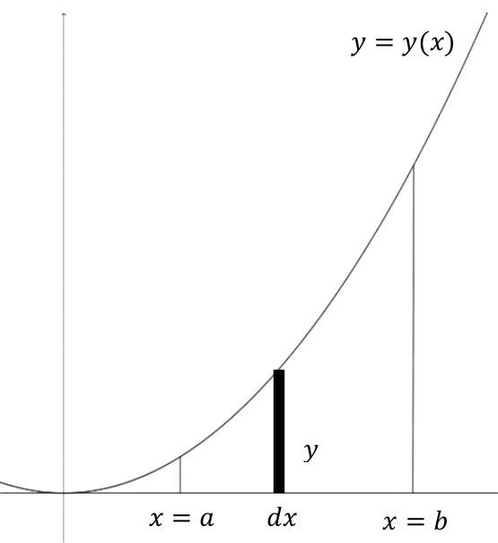
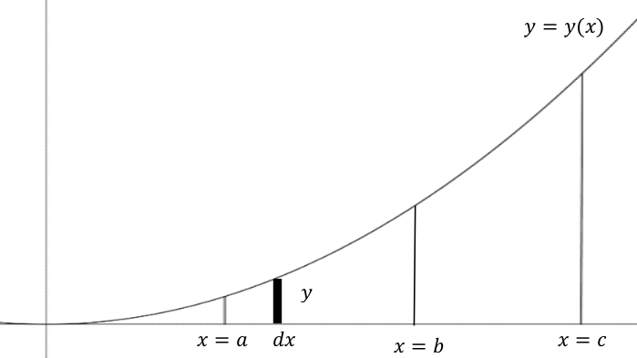
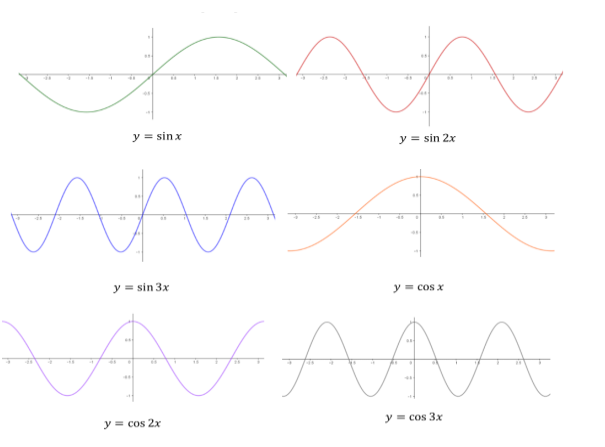

While it is true that areas motivated the definite integral and the Fundamental Theorem of Calculus, it is important to remember that we are really talking about a sum of differentials. This helps to explain some anomalies which occur when applying the fundamental theorem. For example, consider
These properties are consistent with the rules for indefinite integrals, which is not surprising in light of the Fundamental Theorem of Calculus. That being said, let’s make sense of these properties beyond the fundamental theorem. First and foremost, remember that these integrals are sums of differentials and behave like sums. With this in mind, lets compare the first three properties in the table with their finite sum analogs.
The last three properties in Table 2 might seem less obvious. We will make sense of these geometrically, but let’s first note that these are consistent with the fundamental theorem of calculus as illustrated in the following examples.
To see that these properties hold geometrically (without the Fundamental Theorem of Calculus), recall that this really is a sum of differentials. Specifically, we have the following diagram illustrating a generic rectangle that we are summing.

Figure4.4.0.5.A geometic representation of integration
When we consider \(\int_{x=b}^ay\dx{x}\) with \(a\lt b\text{,}\) then the difference \(\dx{x}\) is a positive change. When we consider \(\int_{x=b}^a y\dx{x}\text{,}\) then the difference \(\dx{x}\) represents a negative change. Hence, we have
Consider the following diagram where \(a\lt b \lt c\text{.}\)

Figure4.4.0.7.The sum property of integration
If we are summing differentials \(y\dx{x}\) from \(x=a\) to \(x=b\) and summing them from \(x=b\) to \(x=c\text{,}\) then this certainly would be the same as summing them from \(x=a\) to \(x=c\text{.}\) Thus
Part e of the last problem brings up an interesting aspect about definite integrals. Since the final answer is a number, then the variable t is immaterial. For example, we have
With this in mind, many people call the \(x\text{,}\)\(t\text{,}\) or \(u\) in the integral a “dummy” variable. This means that you can substitute any letter in and it will not change the results.
Speaking of substitution, all of the techniques we applied when computing indefinite integrals work just as well for definite integrals. We just need to make sure that the limits of integration match.
At this point, we have two options: we can integrate and change the variable back into \(x\) to finish the fundamental theorem of calculus, or we can convert everything over to \(z\) and not deal with \(x\) anymore. We’ll show both. In the first approach, we have
Whichever you do is entirely up to you, usually one is not easier than the other. What you cannot do is to substitute an \(x\) limit for \(z\) or vice versa.
Suppose that \(y=y(x)\) has the property that \(y(-x)
=y(x)\text{.}\) Thus \((x,y)\) is on the curve of this function exactly when \((-x,y)\) is on the curve.
Use the substitution \(z=-x\) in the integral on the left.
(c)
Suppose that \(y=y(x)\) has the property \(y(-x)=-y(x)\text{.}\) Thus \((x,y)\) is on the curve of this function exactly when \((-x,-y)\) is on the curve. What would such a curve look like?
Mathematicians (and scientists) use these and other symmetry properties with integrals to simplify problems whenever they can.
For example, in the theory of acoustics, sine and cosine waves form the “pure tones” from which all other sound waves are formed. Mathematically, we can think of a general sound wave as a function on a closed interval of time (which constitutes one cycle of the sound wave). We have some pure tones of varying frequencies defined on the interval \([-\pi, \pi] \text{.}\)

Figure4.4.0.14.Graphical representation of some pure tones
It can be shown (though we won’t do it here), that if a function \(f(t)\) defined on the interval \([-\pi, \pi]\) can be written as the Fourier Series:
With the above set up, suppose that \(f\) is symmetric about the \(y\) axis. That is \(f(-t)=f(t)\text{.}\) Show that in this case, \(b_n=0\) for all \(n\) and so \(f\) can be written exclusively as a sum of cosine waves.
(b)
With the above set up, suppose that \(f\) is symmetric about the origin. That is \(f(-t)=-f(t)\text{.}\) Show that in this case, \(a_n=0\) for all \(n\) and so \(f\) can be written exclusively as a sum of sine waves.
(c)
Given the symmetries of the graphs above, is this surprising? Explain.